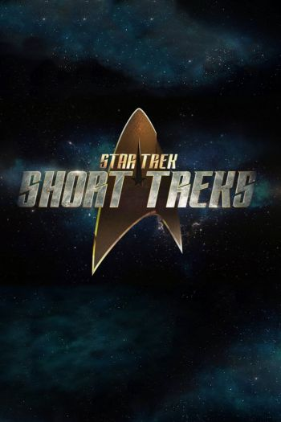
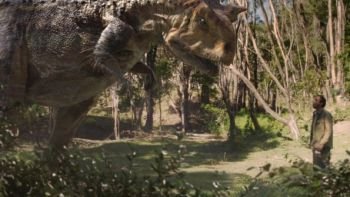

A film series is more than one film, each depicting parts of a larger story. Sometimes the work is conceived from the beginning as a multiple-film work, for example the Three Colours series, but in most cases the success of the original film inspires further films to be made. Individual sequels are relatively common, but are not always successful enough to spawn further installments.
The Marvel Cinematic Universe is the most highest grossing film series in unadjusted US Dollar figures surpassing the Harry Potter, Star Wars and James Bond series. However Peter Jackson's The Lord of the Rings has the highest average box office intake.
Da Vinci's Demons is a historical fantasy drama series that presents a fictional account of Leonardo da Vinci's early life. The series was conceived by David S. Goyer and stars Tom Riley in the title role. It was developed and produced in collaboration with BBC Worldwide and was shot in Wales. The series has been distributed to over 120 countries.
The show follows Leonardo as he is implicated in the political schemes of the Medici and Pazzi families and their contrasting relationships with the Catholic Church. These events occur alongside Leonardo's quest to obtain the Book of Leaves as he finds himself entangled with a cult known as the Sons of Mithras.
The series premiered in the United States on Starz on 12 April 2013, and its second season premiered on 22 March 2014. The series was renewed for a third season, which premiered on 24 October 2015. On 23 July 2015, Starz announced that the third season would be the show's last. However, Goyer has left it open for a miniseries return.
Green Frontier (Spanish: Frontera Verde) is a Colombian crime thriller web television miniseries, created by Diego Ramírez Schrempp, Mauricio Leiva-Cock, and Jenny Ceballos, that premiered on Netflix on August 16, 2019. The series was directed by Ciro Guerra, Jacques Toulemonde Vidal and Laura Mora Ortega and stars Juana del Río, Nelson Camayo, Ángela Cano, Miguel Dionisio Ramos, Bruno Clairefond, Andrés Crespo, Marcela Mar, Mónica Lopera, Andrés Castañeda, John Narváez, Edwin Morales, Karla López and Antonio Bolívar. It was written by Mauricio Leiva-Cock, Gibran Portela, Camila Brugés, Natalia Santa, Javier Peñalosa, Maria Camila Arias, Anton Goenechea and Nicolás Serrano.
Marvel's Iron Fist, or simply Iron Fist, is an American web television series created for Netflix by Scott Buck, based on the Marvel Comics character of the same name. It is set in the Marvel Cinematic Universe (MCU), sharing continuity with the films of the franchise and is the fourth in a series of shows that lead to The Defenders crossover miniseries. The series is produced by Marvel Television in association with ABC Studios, with Devilina Productions and showrunner Buck for the first season. Raven Metzner took over as showrunner for the second season.
Finn Jones stars as Danny Rand / Iron Fist, a martial arts expert with the ability to call upon a mystical power known as the "Iron Fist". Jessica Henwick, Tom Pelphrey, Jessica Stroup, and Sacha Dhawan also star, with Ramón Rodríguez, Rosario Dawson and David Wenham joining them for the first season, Simone Missick and Alice Eve joining the cast for season two. After a film based on the character spent over a decade in development at Marvel Studios, development for the series began in late 2013 at Marvel Television, with Buck hired as the series showrunner in December 2015 and Jones cast as Rand in February 2016. Metzner was revealed as the series' new showrunner in July 2017. Filming for the series takes place in New York City.
All 13 episodes of the first season premiered on March 17, 2017. They received generally negative reviews from critics. Despite the critical reception, third-party data analytics determined the series had strong viewership. A second season, consisting of 10 episodes, was ordered in July 2017, and was released on September 7, 2018 to an improved critical reception. On October 12, 2018, Netflix canceled the series after two seasons.
The Letter for the King is a coming-of-age adventure television series developed by Will Davies and FilmWave for Netflix inspired by the classic 1962 Dutch novel De brief voor de Koning by Tonke Dragt. The six-episode series was released on Netflix on March 20, 2020.

Star Trek: Short Treks is an American anthology web television series created for CBS All Access by Bryan Fuller and Alex Kurtzman. It originated as a spin-off companion series from Star Trek: Discovery, and consists of several shorts that use settings and characters from that series and the wider Star Trek universe. The shorts are around 10 to 20 minutes long.
After signing a deal to expand the Star Trek franchise on television, Kurtzman announced Short Treks as the first such project in July 2018. The first four episodes aired from October 2018 to January 2019, between the first and second seasons of Discovery. The shorts were mostly produced by cast and crew members from Discovery, including composer Jeff Russo who provided an updated main title theme and original underscore for the series. Filming took place in Toronto, Canada, on the set of Discovery.
In January 2019, two new animated shorts were revealed, with four additional live action episodes announced in June 2019. The second season of shorts aired from October 2019 to January 2020, between the second season of Discovery and the first season of Star Trek: Picard, with the last short serving as a teaser for the latter series. The animated shorts were created by visual effects house Pixomondo, while a roster of new composers supervised by Michael Giacchino provided the music for the second set of shorts.
The series has received positive reviews, and has been nominated for several awards including a Primetime Emmy Award.

Terra Nova is an American science fiction drama television series. It aired on the Fox Network for one season from September 26 to December 19, 2011. The series documents the Shannon family's experiences as they establish themselves as members of a colony, set up 85 million years in the Earth's past, fleeing the dystopian overpopulated and hyperpolluted present of the mid-22nd century. The series is based on an idea by British writer Kelly Marcel with Steven Spielberg as executive producer. On March 5, 2012, Fox announced that the show had been cancelled.
War of the Worlds is a television series produced by Fox Networks Group and StudioCanal-backed Urban Myth Films. The series is written by Howard Overman, and directed by Gilles Coulier and Richard Clark. The series is a loose adaptation of The War of the Worlds, a 1898 novel by H. G. Wells about a Martian invasion. It is the third television adaptation of the novel.
The first season consists of eight episodes, and first premiered in France on October 28, 2019. War of the Worlds was renewed for a second season, which premiered on May 17, 2021.